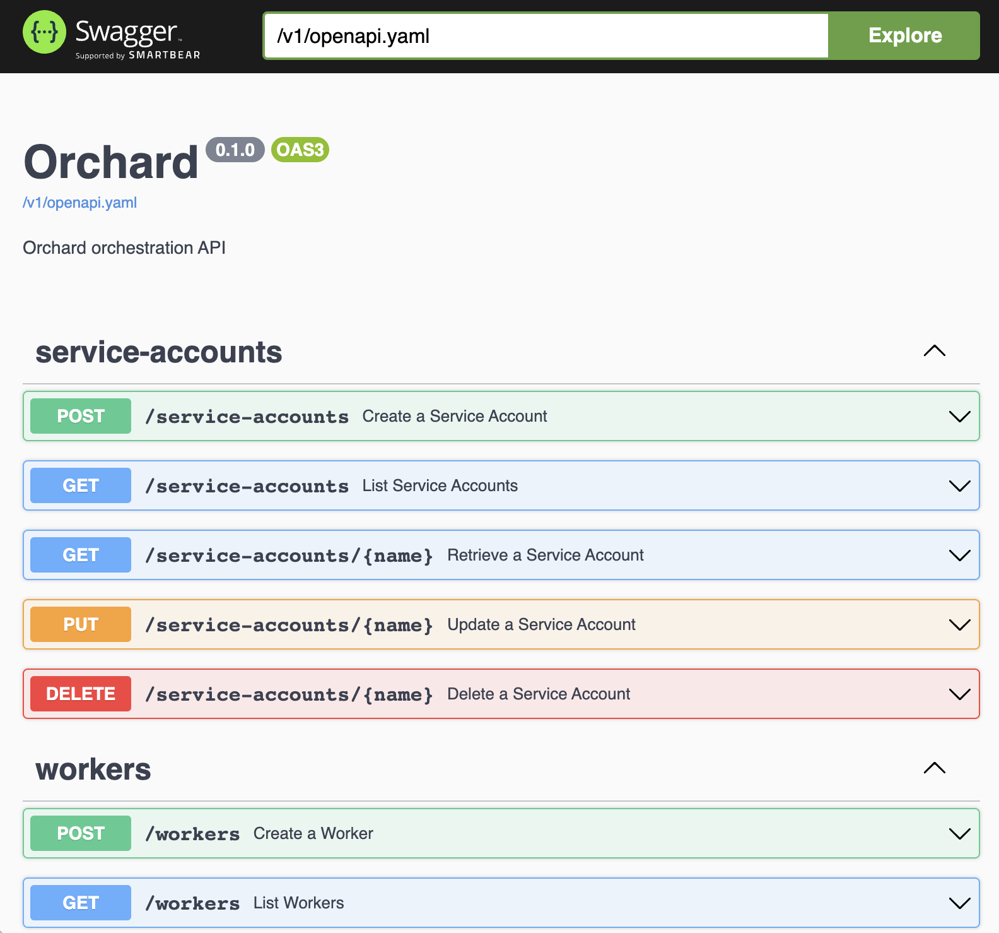

Integrating with the API
Orchard has a REST API that follows OpenAPI specification and is described in api/openapi.yaml.
You can run orchard dev locally and navigate to http://127.0.0.1:6120/v1/ for interactive documentation.

Using the API¶
Below you'll find examples of using Orchard API via vanilla Python's request library and Golang package that Orchard CLI build on top of.
Authentication¶
When running in non-development mode, Orchard API expects a basic access authentication to be provided for each API call.
Below you'll find two snippets that retrieve controller's information and output its version:
Authentication in Python¶
import requests
from requests.auth import HTTPBasicAuth
def main():
# Authentication
basic_auth = HTTPBasicAuth("service account name", "service account token")
response = requests.get("http://127.0.0.1:6120/v1/info", auth=basic_auth)
print(response.json()["version"])
if __name__ == '__main__':
main()
Authentication in Golang¶
package main
import (
"context"
"fmt"
"github.com/cirruslabs/orchard/pkg/client"
"log"
)
func main() {
client, err := client.New()
if err != nil {
log.Fatalf("failed to initialize Orchard API client: %v", err)
}
controllerInfo, err := client.Controller().Info(context.Background())
if err != nil {
log.Fatalf("failed to retrieve controller's information: %v", err)
}
fmt.Println(controllerInfo.Version)
}
Note that we don't provide any credentials for Golang's version of the snippet: this is because Orchard's Golang API client (github.com/cirruslabs/orchard/pkg/client) has the ability to read the current's user Orchard context automatically.
Creating a VM¶
A more intricate example would be spinning off a VM with a startup script that outputs date, reading its logs and removing it from the controller:
Creating a VM in Python¶
import time
import uuid
import requests
from requests.auth import HTTPBasicAuth
def main():
vm_name = str(uuid.uuid4())
basic_auth = HTTPBasicAuth("service account name", "service account token")
# Create VM
response = requests.post("http://127.0.0.1:6120/v1/vms", auth=basic_auth, json={
"name": vm_name,
"image": "ghcr.io/cirruslabs/macos-sequoia-base:latest",
"cpu": 4,
"memory": 4096,
"startup_script": {
"script_content": "date",
}
})
response.raise_for_status()
# Retrieve VM's logs
while True:
response = requests.get(f"http://127.0.0.1:6120/v1/vms/{vm_name}/events", auth=basic_auth)
response.raise_for_status()
result = response.json()
if isinstance(result, list) and len(result) != 0:
print(result[0]["payload"])
break
time.sleep(1)
# Delete VM
response = requests.delete(f"http://127.0.0.1:6120/v1/vms/{vm_name}", auth=basic_auth)
response.raise_for_status()
if __name__ == '__main__':
main()
Creating a VM in Golang¶
package main
import (
"context"
"fmt"
"github.com/cirruslabs/orchard/pkg/client"
v1 "github.com/cirruslabs/orchard/pkg/resource/v1"
"github.com/google/uuid"
"log"
"time"
)
func main() {
vmName := uuid.New().String()
client, err := client.New()
if err != nil {
log.Fatalf("failed to initialize Orchard API client: %v", err)
}
// Create VM
err = client.VMs().Create(context.Background(), &v1.VM{
Meta: v1.Meta{
Name: vmName,
},
Image: "ghcr.io/cirruslabs/macos-sequoia-base:latest",
CPU: 4,
Memory: 4096,
StartupScript: &v1.VMScript{
ScriptContent: "date",
},
})
if err != nil {
log.Fatalf("failed to create VM: %v")
}
// Retrieve VM's logs
for {
vmLogs, err := client.VMs().Logs(context.Background(), vmName)
if err != nil {
log.Fatalf("failed to retrieve VM logs")
}
if len(vmLogs) != 0 {
fmt.Println(vmLogs[0])
break
}
time.Sleep(time.Second)
}
// Delete VM
if err := client.VMs().Delete(context.Background(), vmName); err != nil {
log.Fatalf("failed to delete VM: %v", err)
}
}
Resource management¶
Some resources, such as Worker and VM, have a resource field which is a dictionary that maps between resource names and their amounts (amount requested or amount provided, depending on the resource) and is useful for scheduling.
Well-known resources:
org.cirruslabs.tart-vms— number of Tart VM slots available on the machine or requested by the VM- this number is
2for workers and1for VMs by default
- this number is